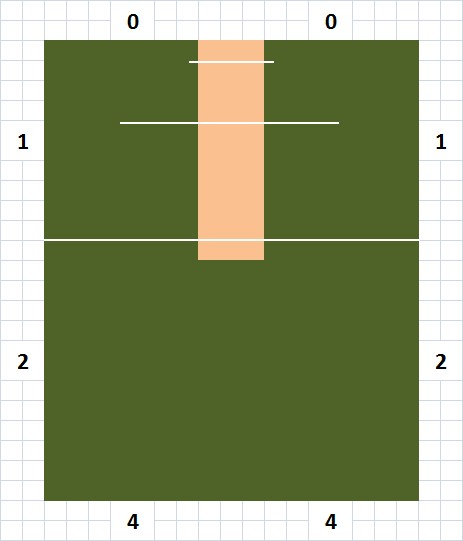

Find the Ground structure and the Rules. These rules will be final and all teams are supposed to Adhere to these rules.

Captains need to make sure that the rules are well understood by them and their team members so that there is no confusion on the field.
Team Rules
- The team should contain 11 team members in a squad (Playing 8 + 3 Extras)
- The playing 8 should have at least 2 Girls
- Every batting team is required to assign two Players outside the field to catch the ball.
Match Rules
- The Match should begin at the specified time, and end within the given interval.
- The Match will be of 4 overs in each innings, each of which will contain 6 valid balls to be bowled.
- Mini over NOT allowed.
- The team are expected to be at the playing site 10 minutes before the match start with the playing 8.
- In case a team is unable to do so, the match will be not be forfeited, and opposite team will get wining points.
- A win will award a team 4 points. In case of Draw, points will be splited with each team getting 2 points.
Ground and Scoring Rules
- The match will be played on the ground specifically made for and with Box Cricket Rules (Rectangular in Format)
- The scoring of the runs will be done on the basis of from which part of the boundary the ball crosses and goes out.
A) Between stump line and Bowling Crease line, 1 run will be declared
B) After bowling crease line from any of the side boundary lines, 2 runs will be declared
C) Straight boundary line, 4 runs will be declared
The image attached shows the declaration of runs
- Batsmen can also score runs by running between the wickets
- Line Touch is also considered to be ball crossing the boundary line and the RUNS will be allotted to the Batting Team
- In case of overthrow, if the ball crosses the line, the runs will be allotted to the Batting Team.
- There are NO RUNS allotted behind the wickets, NOT even in case of Overthrow
Batting Rules
- The Girl in the team should get a batting chance after first wicket.
- Runs can be scored by - hitting 1 Declare, 2 Declare, 4 runs or Running between the wickets.
- The batsmen is considered out if the ball is hit and it directly lands ON or OUTSIDE the boundary line
- If the ball touches any member of the fielding team and then goes directly outside the line, then the marked runs will be allotted to the batting team, and the batsman will NOT be considered out.
- The batsman will be considered out on a NO BALL when Run Out or Stumped or Box Out and following will apply
i) The NO BALL will be considered
ii) Batsmen will be considered out
iii) One run will be allotted to the batting team for the NO BALL
- Batsman will NOT be considered out when the ball is bowled full toss above the waist line and if he hits out of the box. In that case one run will be given for the NO BALL and one run for hitting the ball anywhere out of the box except behind the wickets. If ball remains in the box, batsmen can run between the wickets.
- Batsman will be considered caught out if the ball is caught directly by the fielder after the shot, without hitting the ground. One Bounce is Not Out.
- Byes NOT Allowed
- Leg Byes NOT Allowed
- LBW is NOT OUT.
Bowling Rules
- Bowling should be done under-arm
- Inform about side to umpire when a bowler balls for the first time, else umpire can give NO BALL.
- No balls.
A)Full toss above the waist
B) Bowling crease line cut
C) Ball should pitch between the batsman and half line (Crease line in the middle of the pitch) while bowling
-Wide Balls.
A) Ball passing the batsman from outside the wide line on the off side
B) Ball passing the batsman from the leg side and missing leg stumps
- Minimum one over should be done by girl.
- Only one bowler can bowl maximum 2 overs.
- 4 bowlers from each team can bowl i.e.[2-1-1-1]
- Step out/ Walk over/Running while bowling is not allowed
- Further rules will be explained in the ground
- Mini over NOT Allowed
Umpiring Rules
- Every match will have a neutral umpire.
- Umpire's decision is considered final.
Fielding Rules
- Overthrow rules as per cricketing rules.
1) Run between wickets on overthrow
2) ball crossing boundary lines is considered as Four runs
3) NO six in overthrow.
- Wicket-keeper can also bowl. However, the change of wicket keeper needs to be declared to the umpire.
Scorers Rules
- Every match should have a neutral scorer.
- Scorer needs to do the following
A)Capture the score in detail, runs per batsman, fall of wickets, bowler stats, etc., using the printout template given.
B)After the match, Validate the score.
C)Submit the score of the match, so that the stats can be calculated
- Captains needs to validate the scores with the scorers.
- In case of dispute, Umpire's decision to be considered final.
NOTE: CMAT has all rights to change any rules.